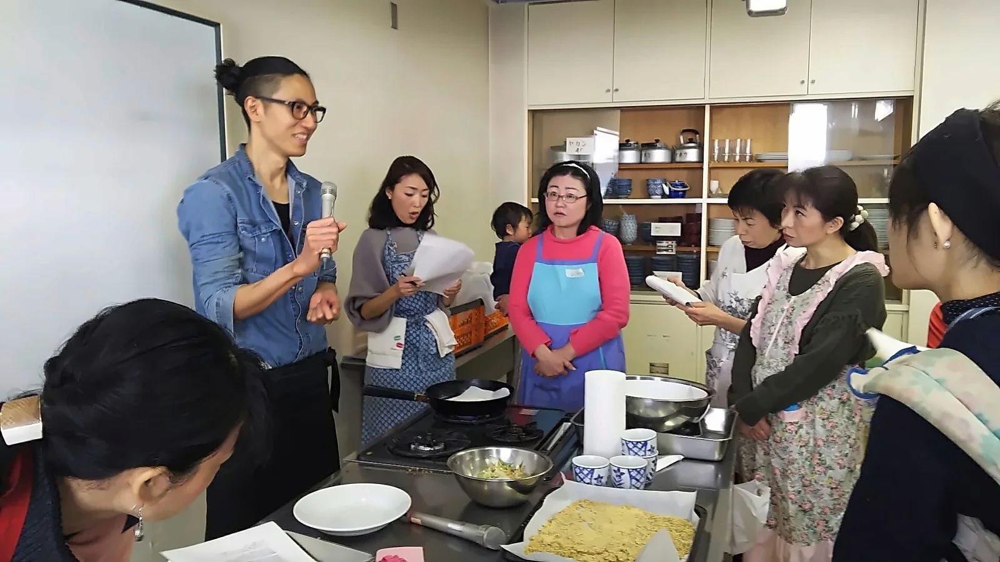
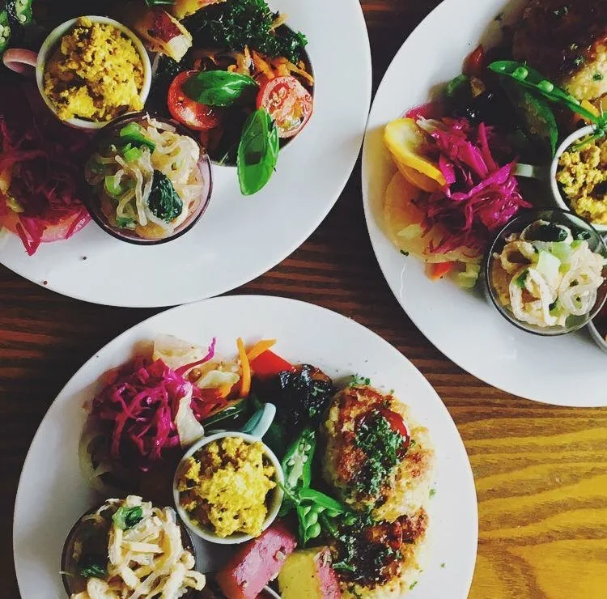
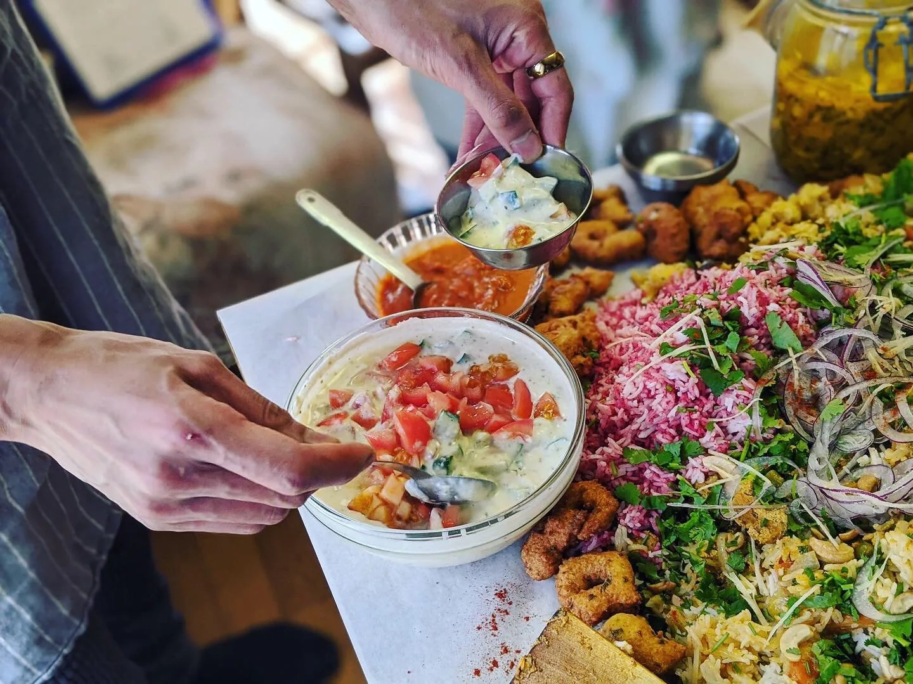
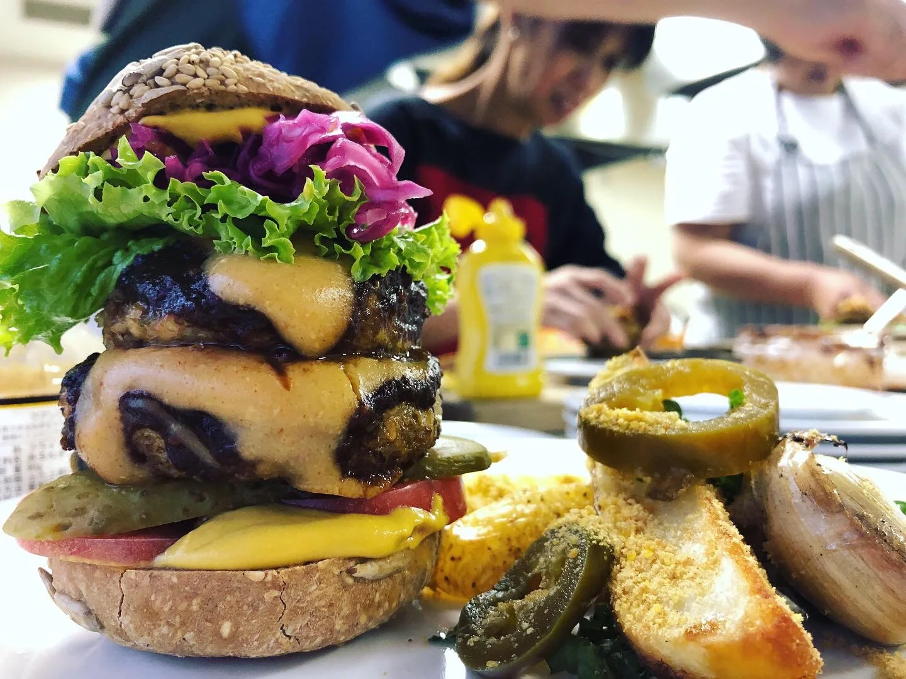
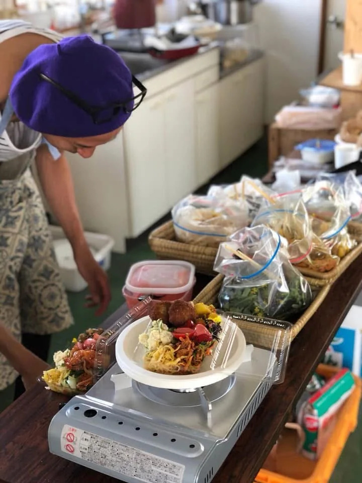

COOKING CLASS
土の恵みを、
体の中から整える。
滋養
彩り豊かな一皿
野菜と発酵食品を主役にした、見た目も楽しい盛り付けを学びます。
手を動かしながら学ぶ
薬味やソースの仕上げも、実際に手を動かしながら一つひとつ確認していきます。
作って、味わう
作って終わりではなく、その場で一緒に味わう時間も大切にしています。
仕上げの様子
出来上がった一品一品を、丁寧に整えてお出しします。
難しい手順より、素材の力を引き出す知恵を。
甲州市の地場野菜と、東洋のスパイスを組み合わせながら、体を内側から整える料理を一緒に作ります。特別な技術や高価な道具は必要ありません。旬の素材が本来持っている力を、シンプルな調理法で引き出すことを大切にしています。
作って終わりではなく、「なぜこの組み合わせが体に良いのか」という考え方もあわせてお伝えするので、教室の後もご自宅で応用していただけます。

01教室の特徴
- 甲州市周辺で採れる地場野菜を中心に使用
- ターメリックやクミンなど東洋のスパイスを取り入れた献立
- 実習形式で、実際に手を動かしながら学びます
- 作った料理はその場で試食していただけます

02こんな方におすすめです
- 普段の食事を、もう少し体に優しいものに変えたい方
- スパイスや発酵食品に興味はあるが、使い方がわからない方
- 季節や土地の恵みを暮らしに取り入れたい方

03クラス概要
- 対象
- どなたでもご参加いただけます（調理経験は問いません）
- 形式
- 少人数制・実習形式
- 開催頻度
- 週1回
- 定員
- 1回 3〜5名
- 場所
- 山梨県甲州市内キッチンスタジオ（詳細住所は準備中）
- 料金
- 回数券・パッケージ制金額は準備中です。お問い合わせ時にご案内します
- 持ち物
- エプロン貸し出しは行っておりません

04特別メニュー：ビリヤニ曼荼羅
お祝いやおめでたい席のための、ケータリングメニューもご用意しています。誕生日や結婚のお祝い、記念日など、大切な集まりの主役としてお使いいただけます。
05よくあるご質問
料理が初めてでも参加できますか？
はい、問題ありません。調理経験を問わず、どなたでもご参加いただけます。
アレルギーがあるのですが対応できますか？
可能な範囲で対応いたします。お申し込みの際に事前にお知らせください。
単発での参加は可能ですか？
現在詳細を準備中です。お問い合わせの際にご希望の参加形式をお聞かせください。